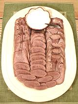

|
Beef TongueFinland (and most of Europe) - Keitetty Kieli | ||||
| Makes: Effort: Sched: DoAhead: |
2-1/4 # ** 5 hrs Yes |
Beef tongue is a popular appetizer and sandwich ingredient throughout most of Europe, and takes little effort to prepare. Back in the 1960s, tongue was "junk meat", sold at a low price to starving artists and the like. Today, it's a popular cut and sold for much higher prices. | |||
|
3-1/2 8 1 5 ----- 2 4 1/2 1/2 1/2 |
# oz T --- T T T t c |
Tongue (1) Onion Salt Allspice, whole -- Dressing - (10 min) Vinegar (2) Horseradish, grated (3) Sugar (4) Cinnamon Cream, whipping |
Make - (5 hrs - 30 min work)
|